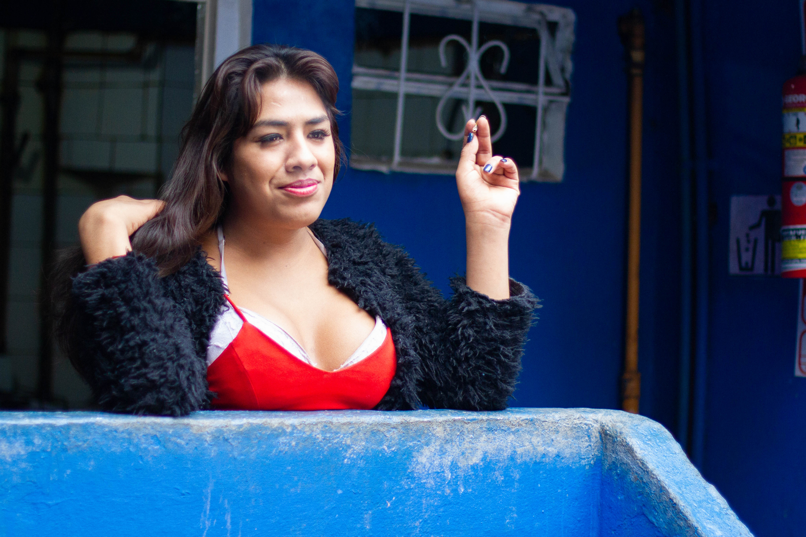

Current project
El proyecto propone indagar conceptual y materialmente distintas formas de desplazamiento y mutación, especialmente aquellas vinculadas a la traducción, el lenguaje y la metamorfosis. Si en trabajos anteriores me preguntaba por la pérdida, el desarraigo y la migración como formas de movimiento y transformación, en el presente retomo estos conceptos, pero trasladándolos hacia cuestiones vinculadas con el cuerpo y su relación con los objetos, especialmente el vinculado a la memoria del objeto. Me interesa explorar la mutación y comunicación entre lo humano, lo animal no humano y lo vegetal, por lo que trabajo con pelo de caballo para dar forma a ciertas joyas o prendas que funcionan junto al cuerpo, en referencia a los guardapelos o relicarios de la joyería victoriana que eran utilizados para guardar cenizas y cabello. Me interesa además el estudio de las joyas y amuletos desde una perspectiva histórica, en cuanto al poder o valor sentimental que se les asigna.


Cruzando la línea: Rey Neptuno
Desde comienzos del siglo XVI, aquellos que navegaban por un territorio desconocido prometían al mar o a sus dioses un sacrificio a cambio de un viaje seguro y un mar piadoso libre de vientos furiosos. Quienes nunca habían cruzado la línea del Ecuador debían ser iniciados en un ritual donde encomendaban su vida al Rey (ó Padre) Neptuno. El mayor de la tripulación, que había pasado la línea antes, era quien representaba a Neptuno. Acompañado por su corte, Neptunus Rex daba comienzo al bautismo: se acercaba a los demás marineros con la cara ennegrecida, un sombrero y algún libro de mar en la mano. Los freshmen (ó no iniciados), lo esperaban con utensilios de cocina en las manos, rejillas de hierro, pavas ó campanas para anunciar con ruido la visita del Rey. Neptuno se sentaba al pie del mástil principal, en el tribunal del magistrado, donde cada uno de los iniciados juraba sobre el libro y un mapa que repetirá la misma ceremonia cuando las circunstancias se lo exigieran. Eran entonces bautizados con agua helada de mar y marcas oscuras en la frente de grasa, peces muertos ó basura. Los pollywog (o renacuajos) representan en el lenguaje marino a los no iniciados; el ritual iniciaba su metamorfosis a “Trusty Shellbacks” (tortugas de agua) ó hijos de Neptuno.
Este proyecto de investigación se inicia a partir de una serie de imágenes e historias familiares donde se relata un viaje en barco desde Buenos Aires a Francia en 1968 en el que mi abuelo Enrique es convocado a representar a Neptuno en un ritual iniciático.
Cruzando la línea: Rey Neptuno from AGUSTINA FIORETTI on Vimeo.
Material de archivo de diversas fuentes (archivo nacional de USA, Francia, entre otros) y archivo familiar.


Ilusión del Sur
Ilusión del Sur


Video - curatorial text
Ilusión del Sur from AGUSTINA FIORETTI on Vimeo.
Curatorial text | Jesu Antuña
No es sencillo hablar de algo, nombrarlo, cuando la relación entre las palabras y las cosas está rota. Podríamos comenzar este texto citando una fábula. Buscar, por ejemplo, alguna que narre la creación del mundo, de una nación o del hombre. Más difícil sería encontrar una sobre la disolución de la palabra, lo que no necesariamente significa su agotamiento. Cuando se rompe la relación entre las palabras y las cosas, lo que queda de manifiesto es que debemos buscar otras formas de interrogar la constitución misma del espacio y del tiempo, los dos grandes a-priori del mundo occidental. Ilusión del sur podría ser una primera pista para pensar esas otras formas posibles. Si desclasificamos un primer acercamiento en el orden del sentido común, entonces la ilusión quizá no sea sencillamente aquello que se opone a la realidad para quedar del lado de la fantasía, sino un elemento de futuro – estético y político – para pensar otras posibilidades. El sur, no tanto por su pertenencia a lo geográfico, sino como concepto capaz de agrupar a las alteridades globales en continuo movimiento, es una oportunidad para imaginar un nuevo reparto del tiempo y de los espacios. El nomadismo, la errancia, son en la historia de la cultura occidental degradados frente a la idea del sedentarismo, lo que permitió imaginar, entre otras cosas, a los grandes Estados. La idea de movimiento, por el contrario, evoca una matriz extraña. Rechazada, parece más propia de bárbaros e indígenas – o de los actuales inmigrantes – que vagan en ese espacio sin espacio que es la frontera. Ilusión del sur da cuenta de los flujos de movimiento que circulan entretejiendo historias de migraciones propias de una familia y de un país - Argentina- caracterizado por recibir flujos migratorios, pero también, en distintos procesos históricos, de expulsar a los propios. El espacio y el tiempo entonces se desvanecen como conceptos fijos para dar lugar a otras formas, más dinámicas y prolíficas, propias de los gestos, los reflejos y de los cuerpos en movimiento.
Project description | Agustina Fioretti
An archeology of nomadism. Stories spread, today as then, in different geographies. Many of the characters in this series seem familiar, but feel unknown to me, almost alien. A sense of self-ignorance of both place and space grows and is juxtaposed with a strong intimacy, with a new story that conforms me now, identifies me. The familiar and the unknown are in synchrony. Like a magical ritual, I seek to reach below the surface layers to reveal underlying thoughts; to disturb my own thinking mechanism. Everything lives together; even what we thought was incompatible. The boundary between reality and the imaginary blur. The common ground between nature and civilization fades rapidly. Color and gestures can be a way of telling a story, personal and foreign. A sequence of choreographies disfigures the landscape; automated gestures fade into a temporal and spatial confusion. The inhabited space is also a space of expression - disruptive space, interstitial space. A free game of actions where the body changes its shape, content, and meaning; an open game where borders recede and contours resemble (or otherwise disappear). …
Bordering space. Space for sedimentation of experiences. Hallucination and fantasy.
Camuflaje vol.1


Camuflaje vol.2


Hotel gondolin




Clerks

Sun of a beach